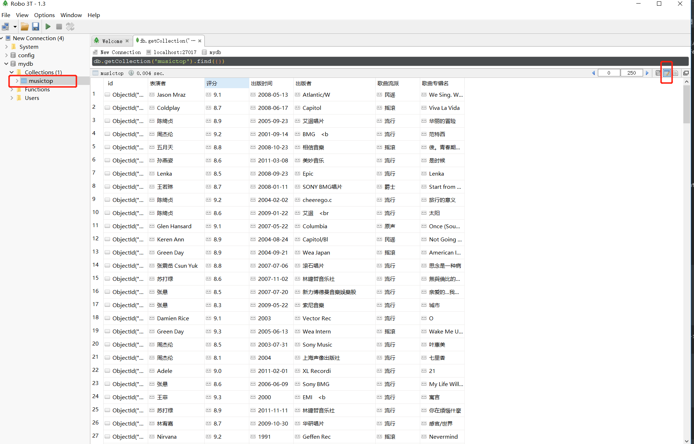
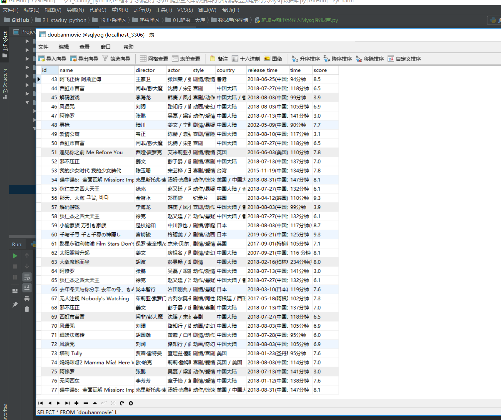

Contents
20.10. 数据的存储¶
20.10.5. 爬取豆瓣音乐Top250排行的数据存储到MongoDB¶
#!/usr/bin/env python
# -*- coding:utf8 -*-
# auther; 18793
# Date：2019/7/14 13:27
# filename: 爬取豆瓣歌曲top250存入mongoDB数据库.py
"""
手动浏览网页数据如下：
https://music.douban.com/top250
https://music.douban.com/top250?start=25
https://music.douban.com/top250?start=50
https://music.douban.com/top250?start=75
https://music.douban.com/top250?start=0也能正常浏览，因此只需要更改start=后面的数字即可。
以此来构造出前10页的网址。
本次爬取在详细页面中进行，先爬取详细页面网址链接，再爬取数据
需要爬取的信息有：歌曲专辑名、表演者、流派、发行时间、出版者和评分
把爬取的数据存储到MongoDB数据库中
"""
import requests
from lxml import etree
import pymongo
import re
import time
"""
导入requests库用于请求网页
Lxml库和re库用于解析抓取网页数据
Pymongo用于对MongoDB数据库的操作
time库的sleep()方法可以暂停程序，缓解写入MongoDB数据频率
"""
clinet = pymongo.MongoClient('localhost', 27017)
mydb = clinet['mydb']
musictop = mydb['musictop'] # 连接数据库及创建数据库、数据集合
"""
创建MongoDB数据库和集合
"""
headers = {
"User-Agent": "Mozilla/5.0 (Windows NT 10.0; Win64; x64) AppleWebKit/537.36 (KHTML, like Gecko) Chrome/75.0.3770.100 Safari/537.36"
}
"""
伪装浏览器代理，便于爬虫的稳定性
"""
def get_url_music(url):
"""
获取详细页url信息，通过Xpath语法提取标签中的href信息，最后调用get_music_info()函数。
:param url:
:return:
"""
html = requests.get(url, headers=headers)
selector = etree.HTML(html.text)
music_hrefs = selector.xpath('//div[@class="pl2"]/a[1]/@href')
for music_link in music_hrefs:
# print(music_link)
get_music_info(music_link)
def get_music_info(url):
"""
爬取歌曲专辑名、表演者、流派、发行时间、出版者和评分
:param url:
:return:
"""
html = requests.get(url, headers=headers)
selector = etree.HTML(html.text)
name = selector.xpath('//*[@id="wrapper"]/h1/span/text()')[0] # 歌曲专辑名
# author = selector.xpath('//*[@id="info"]/span[1]/span/a/text()') #表演者
author = re.findall(r'表演者:.*?>(.*?)</a>', html.text, re.S)[0].strip()
styles = re.findall(r'<span class="pl">流派:</span> (.*?)<br>', html.text, re.S)
# print(styles[0][:6].strip())
if len(styles) == 0:
style = "未知"
else:
style = styles[0][:6].strip() # 歌曲流派
time = re.findall(r"发行时间:</span> (.*?)<br>", html.text, re.S)[0][:10].strip("<").strip() # 发行时间
chubanzhe = re.findall("出版者:</span> (.*?)<br>", html.text, re.S)
# print(chubanzhe[0][:8])
if len(chubanzhe) == 0:
chubanzhe = "未知"
else:
chubanzhe = chubanzhe[0][:10].strip("<").strip() # 出版者
score_pinfen = selector.xpath('//*[@id="interest_sectl"]/div/div[2]/strong/text()')[0] # 评分
# print(name, author, style, time, chubanzhe, score_pinfen)
data = {
"歌曲专辑名": name,
"表演者": author,
"歌曲流派": style,
"出版时间": time,
"出版者": chubanzhe,
"评分": score_pinfen
}
# print(data)
musictop.insert_one(data) # 插入数据
if __name__ == '__main__':
urls = ["https://music.douban.com/top250?start={}".format(str(i)) for i in range(0, 250, 25)]
"""
使用列表推导式构造10个URL，依次调用get_url_music()函数。暂停程序1秒写入，防止频率过快导致爬虫失败。
"""
for url in urls:
get_url_music(url)
time.sleep(1)
# url = "https://music.douban.com/subject/3329183/"
# get_music_info(url)
windows上面安装MongoDB软件包
mongodb-win32-x86_64-2008plus-ssl-4.0.10.zip
启动mongoDB数据库
mongod --dbpath F:\各类数据库软件\mongoDB安装包\mongodb-win32-x86_64-2008plus-ssl-4.0.10\data\db
使用mongoDB可视化连接工具
robo3t-1.3.1-windows-x86_64-7419c406.zip
爬取的结果如下： 
20.10.6. 爬取豆瓣电影存入Mysql数据库¶
#!/usr/bin/env python
# -*- coding:utf8 -*-
# auther; 18793
# Date：2019/7/14 17:38
# filename: 爬取豆瓣电影存入Mysql数据库.py
import requests
import time
from bs4 import BeautifulSoup
from lxml import etree
import re
import pymysql
"""
手动浏览豆瓣电影的网页结构如下
https://movie.douban.com/review/best/?start=0
https://movie.douban.com/review/best/?start=20
https://movie.douban.com/review/best/?start=40
https://movie.douban.com/review/best/?start=60
"""
conn = pymysql.connect(host="localhost", user="root", passwd="admin#123", db="sqlyog",
port=3306, charset="utf8")
cursor = conn.cursor() # 连接数据库及光标
headers = {
"User-Agent": "Mozilla/5.0 (Windows NT 10.0; Win64; x64) AppleWebKit/537.36 (KHTML, like Gecko) Chrome/75.0.3770.100 Safari/537.36"
}
def get_movie_url(url):
"""
定义获取URL详细页的函数
:param url:
:return:
"""
html = requests.get(url, headers=headers)
selector = etree.HTML(html.text)
movie_hrefs = selector.xpath('//div[@class="main review-item"]/a/@href')
for movie_href in movie_hrefs:
# print(movie_href)
get_movie_info(movie_href) # 调用获取详细页的函数
def get_movie_info(url):
"""
获取详细页信息的函数
:param url:
:return:
"""
html = requests.get(url, headers=headers)
selector = etree.HTML(html.text)
# 这里通过try来处理，防止报错就停止爬取
try:
name = selector.xpath('//*[@id="content"]/h1/span[1]/text()')[0]
daoyan = selector.xpath('//*[@id="info"]/span[1]/span[2]//a/text()')
daoyan = "/".join(daoyan)
zhuyans = selector.xpath('//*[@id="info"]/span[3]/span[2]')[0]
zhuyan = zhuyans.xpath('string(.)')
style = re.findall(r'<span property="v:genre">(.*?)</span>', html.text, re.S)
style = "/".join(style)
country = re.findall(r'<span class="pl">制片国家/地区:</span> (.*?)<br/>', html.text, re.S)[0]
release_time = re.findall(r'<span property="v:initialReleaseDate" content="(.*?)">(.*?)</span>', html.text,
re.S)[0][0]
time = re.findall(r'片长:</span>(.*?)>(.*?)</span>', html.text, re.S)[0][1]
score = selector.xpath('//*[@id="interest_sectl"]/div[1]/div[2]/strong/text()')[0]
# print(str(name), str(daoyan), str(zhuyan), str(style)), \
# str(country), str(release_time), str(time), str(score)
# 获取信息插入数据库
cursor.execute("insert into doubanmovie (name, director, actor, style, country, release_time, time, score) "
"values (%s,%s,%s,%s,%s,%s,%s,%s)",
(str(name), str(daoyan), str(zhuyan), str(style),
str(country), str(release_time), str(time), str(score)))
except:
pass
if __name__ == '__main__':
# url = "https://movie.douban.com/review/best/?start=0"
# get_movie_url(url)
# url = "https://movie.douban.com/subject/4739952/"
# get_movie_info(url)
urls = ["https://movie.douban.com/review/best/?start={}".format(str(i)) for i in range(0, 200, 20)]
for url in urls:
get_movie_url(url)
time.sleep(1)
conn.commit()
cursor.close()
conn.close()
爬取到的信息如下： 